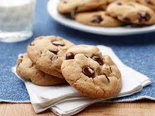

Chocolate Chip Cookies Recipe

Description
Chocolate chip cookies are classic, delicious treats loved by many. These cookies have a perfect balance of sweetness and chocolaty goodness, making them a favorite for any occasion.
Ingredients
- 1 cup unsalted butter, softened
- 1 cup granulated sugar
- 1 cup brown sugar, packed
- 2 large eggs
- 1 teaspoon vanilla extract
- 3 cups all-purpose flour
- 1 teaspoon baking soda
- 1/2 teaspoon salt
- 2 cups chocolate chips
- 1 cup chopped nuts (optional)
Steps
- Preheat the oven to 375°F (190°C). Line a baking sheet with parchment paper.
- In a large mixing bowl, cream together the softened butter, granulated sugar, and brown sugar until light and fluffy.
- Add the eggs one at a time, beating well after each addition. Stir in the vanilla extract.
- In a separate bowl, combine the flour, baking soda, and salt. Gradually add the dry ingredients to the butter mixture, mixing until just combined.
- Stir in the chocolate chips and chopped nuts (if desired) until evenly distributed throughout the dough.
- Drop rounded tablespoons of dough onto the prepared baking sheet, spacing them about 2 inches apart.
- Bake for 9-11 minutes, or until the edges are golden brown. The centers may appear slightly undercooked, but they will firm up as they cool.
- Allow the cookies to cool on the baking sheet for a few minutes, then transfer them to a wire rack to cool completely.
- Enjoy your delicious homemade chocolate chip cookies!